Skip to content
Roofing · Gutters · Home repairs
Tap anywhere to skip
Design preview for Lake Mac Home & Roof Co., prepared by Dusk. Not the live website: the quote forms send nothing.Design preview by Dusk. The forms send nothing.
Home Our work
Our work, job by job.
Every photo on this page is our own, from jobs around Lake Macquarie. Tap any photo to see it larger.
Patio roof, replaced.
The old green sheets were rusted through and broken. New roof sheets and flashing later, it’s a different patio. Drag the handle to compare.
Gable end, re-clad.
The old gable boards came off and new cladding went up, finished to suit the rest of the house.
Filter by the kind of job. 42 photos, all from the business’s Facebook page.
All Roofing Gutters Patios & verandahs Carpentry Windows & cladding Tiling & repairs
New metal roof meeting a tile roof, with flashing 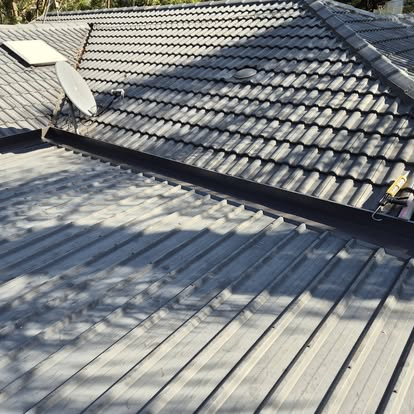
Flashing where the metal roof meets the tiles Red corrugated metal roof 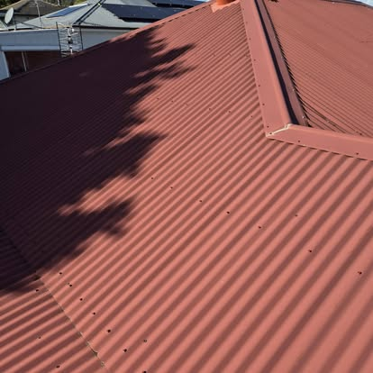
Red metal roof in the afternoon shade Old rusted roof screw next to a new one Patio roof before: rusted, broken sheets Patio roof after: new sheets and flashing Gutter guard along a terracotta tile roof Gutter guard mesh over the gutter 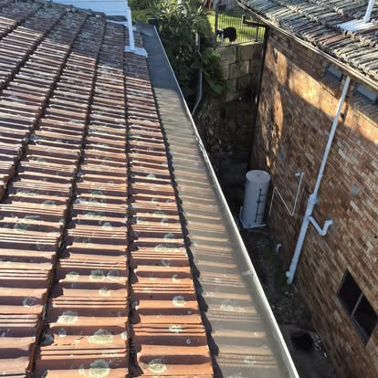
Gutter guard down the side of the house 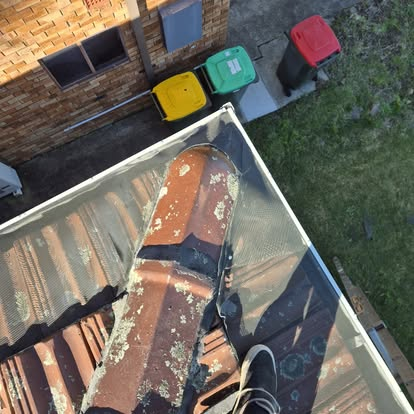
Working along a tile roof 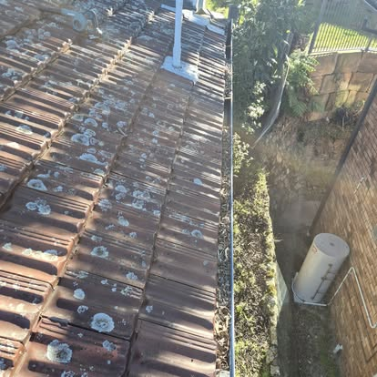
Gutter guard past a roof vent A gutter holding water 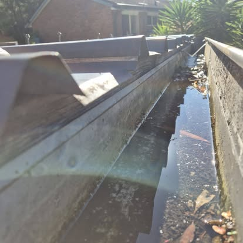
Water lying in a gutter beside metal roofing 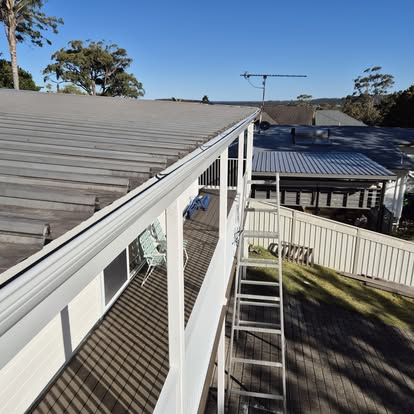
New verandah gutter and rails Verandah ceiling, posts and rails 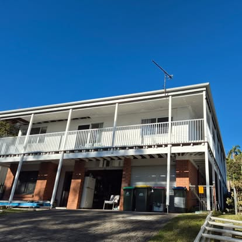
Two-storey verandah with new rails Lined verandah ceiling 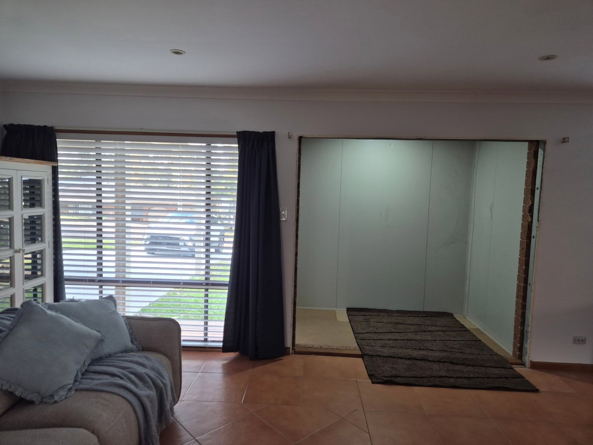
Lounge wall opened into the new entry space 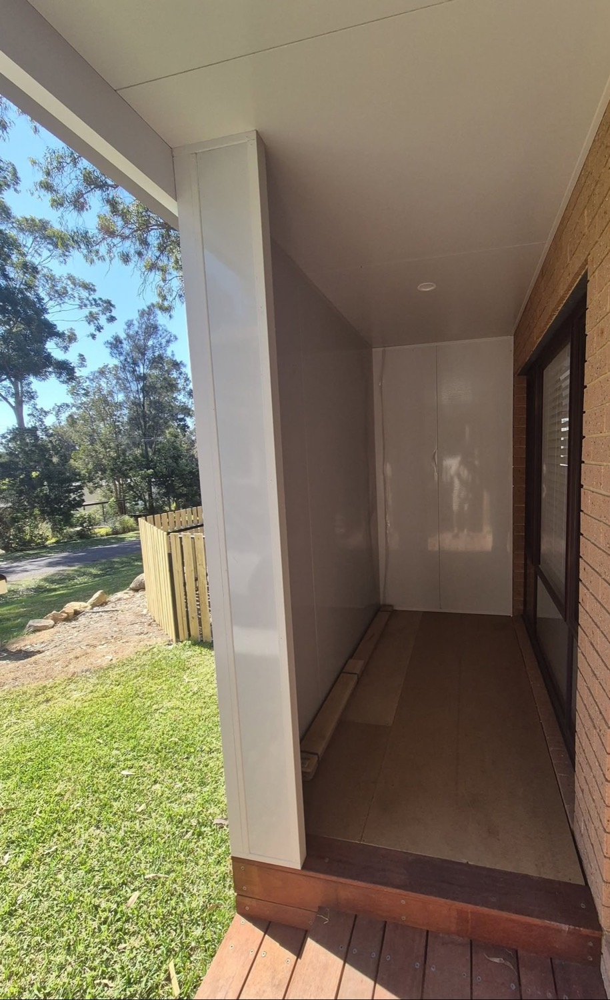
New entry space, lined and roofed 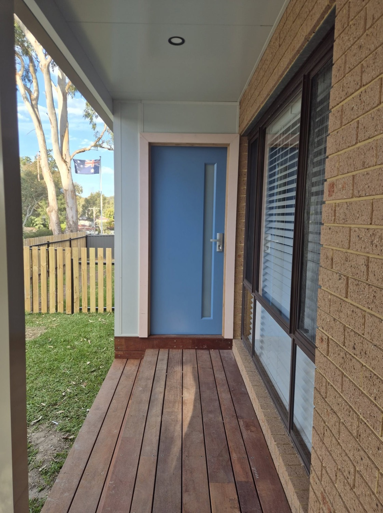
New blue entry door and hardwood deck 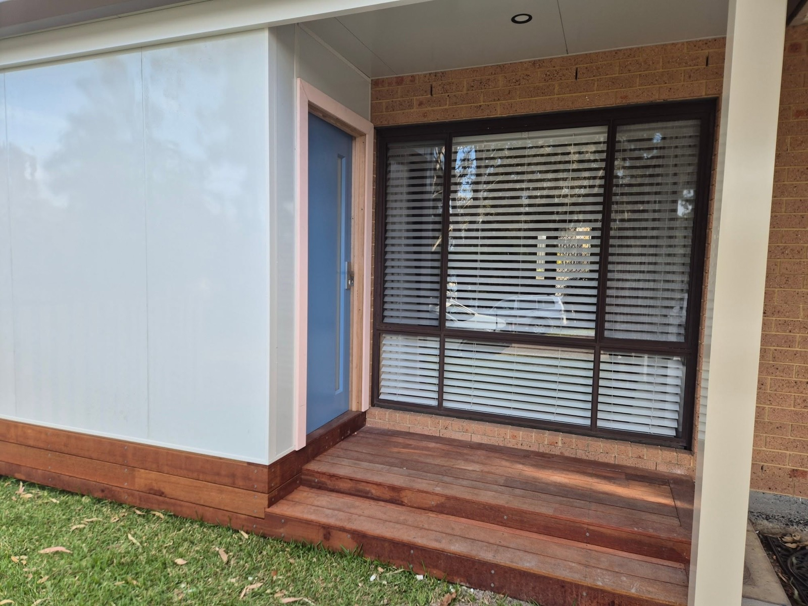
Finished entry with hardwood steps 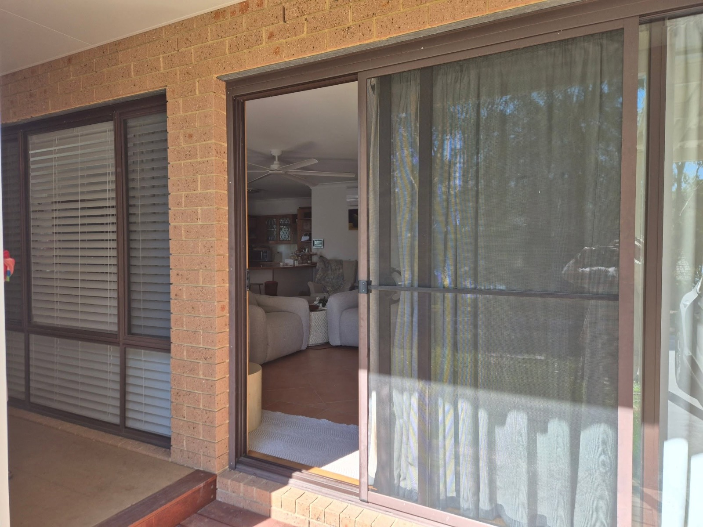
Sliding door and screen onto the deck New stairs taking shape 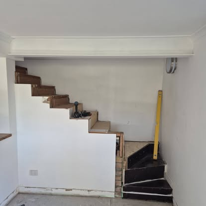
Stair treads going in New floor in a living room Downstairs, with new floors throughout Panelling and shelving New window, flashed into the cladding 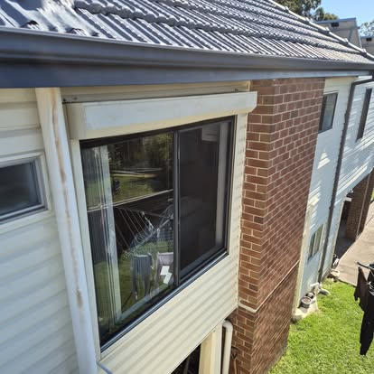
Window under a new gutter 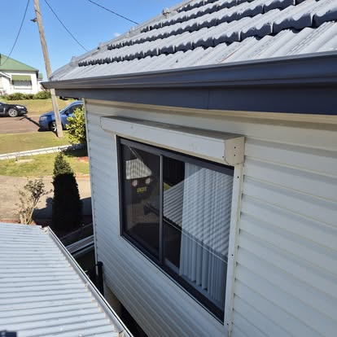
Window and roofline from above A new window from inside 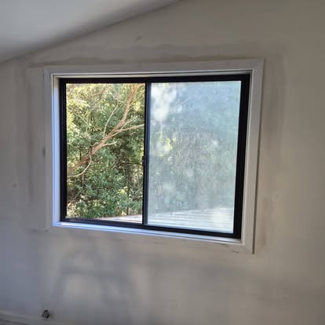
New window looking onto the bush 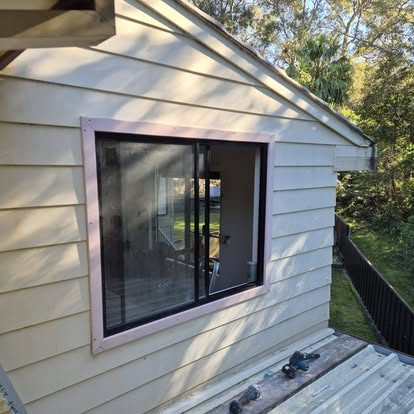
Window in a weatherboard wall 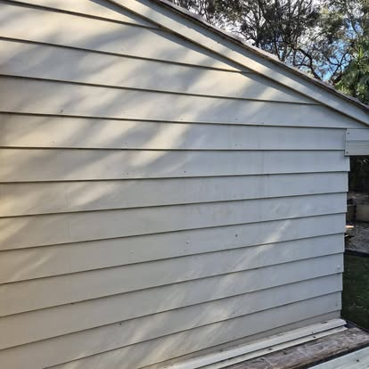
Weatherboard wall Gable end before re-cladding 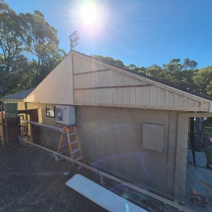
Gable end, part way through Gable end, re-clad Sandstone mosaic laundry, Booragul Floorboards patched in A kitchen floor, stripped back 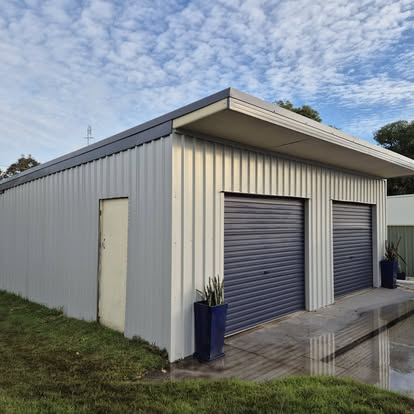
Steel shed with two roller doors
Got a job that’s been on the list too long?
Send a message with a photo or two and we’ll organise a quote. Big job or small one, it’s worth asking.


 BeforeAfter
BeforeAfter